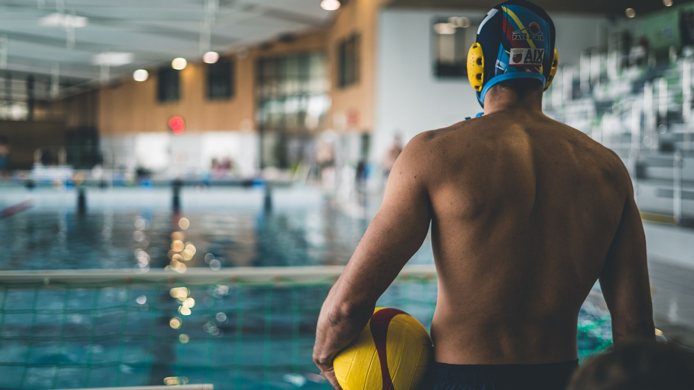

The 2026 USA Water Polo National League Is Here — And It Starts With Players Just Like Yours
USA Water Polo has officially announced the rosters for the opening weekend of the 2026 National League, and the competitive water polo world is buzzing with excitement. This announcement is more than just a list of names — it represents years of dedication, disciplined training, and a deep love for the sport. For parents and young athletes in Wesley Chapel, Land O' Lakes, and the greater Tampa Bay area, this moment serves as a powerful reminder of where commitment and the right development pathway can lead.
What Is the USA Water Polo National League?
The National League is one of USA Water Polo's premier club competitions, bringing together elite club teams from across the country to compete at the highest domestic level. Players who earn a spot on these rosters have typically been training seriously for years, competing through regional circuits, and developing their skills under experienced coaches. The league is a critical proving ground for athletes who have aspirations of competing collegiately or even representing the United States on the international stage.
Seeing these rosters released is a meaningful milestone for the sport, and it gives younger players a concrete, inspiring vision of what the top of the competitive ladder looks like.
Why This Matters for Youth Athletes in the Tampa Bay Area
Florida has long been a strong contributor to competitive water polo, and the Tampa Bay region is no exception. Young athletes in our area have access to quality aquatic facilities, a warm climate that supports year-round training, and a growing community of coaches and teammates who are serious about the sport. The path from a local pool to the National League is absolutely achievable — but it requires early investment in fundamentals, athletic conditioning, and competitive experience.
At Nexar Aquatic Academy, we believe that every young athlete deserves a structured, encouraging environment to build those foundations. Whether a player is just learning the basics of treading water and throwing, or is already competing at a travel club level, the work done in these early years is exactly what shapes a future National League competitor.
Key Skills That Elite Water Polo Players Develop Over Time
Looking at the athletes who compete at the National League level, there are several qualities that set them apart. Parents and young players should understand that these traits are developed over time, not overnight.
- Eggbeater kick endurance: Elite players can tread water powerfully for extended periods while still executing throws and blocks.
- Swimming fitness: A strong freestyle base is non-negotiable — water polo is as much a swimming sport as it is a ball sport.
- Tactical awareness: Understanding positioning, defensive rotations, and offensive sets takes years of repetition and quality coaching.
- Mental resilience: High-level competition demands composure under pressure and the ability to stay focused through adversity.
Starting the Journey at the Right Place
One of the most important decisions a family can make is choosing the right environment for their young athlete to grow. Structured programming, knowledgeable coaches, and a positive team culture all play significant roles in long-term athletic development. Nexar Aquatic Academy, serving the Wesley Chapel and Land O' Lakes communities, is committed to providing exactly that kind of environment — one where young athletes are challenged, supported, and inspired to chase big goals.
The 2026 USA Water Polo National League rosters are a reminder that elite athletes start somewhere. They start in local pools, with local coaches, building the skills and the love of the game that carry them to the top. That journey can begin right here in our own backyard.
Ready to Take the Next Step?
If your family is curious about water polo — or if your young swimmer is looking for a new challenge — now is a great time to explore what competitive aquatic sports have to offer. The path to the National League starts with the first step into the water.
Ready to get in the water?
First practice is completely FREE — no commitment needed.